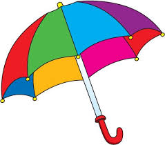

This is an H2
This is a Link:1. a collapsable shade for protection against weather consisting of fabric stretched over hinged ribs radiating from a central pole especially a small one for carrying in the hand. 2. something which covers or embraces a broad range of elements or factors decided to expand. 3. the bell-shaped or saucer-shaped largely gelatinous structure that forms the chief part of the body of most jellyfishes.
This is a Link:1. herbage suitable or used for grazing animals 2. any of a large family (Gramineae synonym Poaceae) of monocotyledonous mostly herbaceous plants with jointed stems, slender sheathing leaves, and flowers borne in spikelets of bracts 3. land (such as a lawn or a turf racetrack) covered with growing grass 4. grasses plural; leaves or plants of grass 5. a state or place of retirement 6. [short for grasshopper, rhyming slang for copper] slang, British : a police informer
This is a Link:a group of World Wide Web pages usually containing hyperlinks to each other and made available online by an individual, company, educational institution, government, or organization
Another h2
Creating your own rain umbrella is easy if you use the right materials and follow the correct steps. To create a rain umbrella, you'll need the old mechanism from an existing umbrella, the proper fabric for the canopy, and a sewing machine. This is a great alternative to buying a new umbrella if your canopy is damaged, and is a creative way to re-style an existing umbrella.